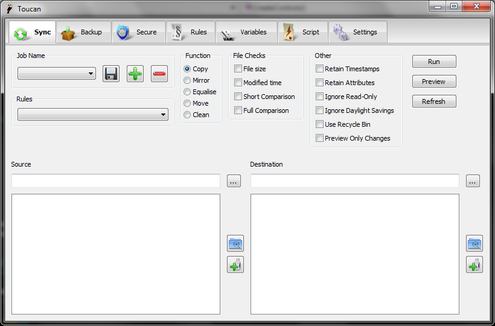

Sync¶
Overview¶
Sync can be used to keep your files up to date, or just to copy them around. It supports a number of different modes and uses a number of techniques in order to ensure that only files that are different are copied, reducing the number of slow writes that are performed on slow devices. Also attributes such as timestamps can easily be copied and changes in time due to daylight savings can be ignored. Long paths and UNC paths are supported in the source and destination to allow easy syncs across networks.
User Interface¶
The Sync user interface is split into a top half with the jobs, rules and other settings and then two identical halves representing the source and the destination of the sync job. At the top of each of these areas is directory selector, once you have chosen a directory its contents appear in the file list below. There are also buttons for expanding all of the folders you have selected and for selecting a variable.

Function¶
The table below summarises the different Sync modes that are available. The column headers as where the fileexists, S stands for Source and D for Destination.
| Mode | S and D, S newer | S and D, D newer | In S only | In D only | Summary |
|---|---|---|---|---|---|
| Copy | Copy S to D | Copy S to D | Copy S to D | - | Copy every file in the source directory to the destination directory based on the file checks. Deletes nothing. |
| Mirror | Copy S to D | Copy S to D | Copy S to D | Delete D | Copy every file in the source directory to the destination directory, and delete every file in the destination directory that is not in the source directory. |
| Equalise | Copy S to D | Copy D to S | Copy S to D | Copy D to S | If a file is in both directories, copy the newer to the older; if it’s in only one, copy it to the other. (This ensures that both directories have the newest possible files) |
| Move | Copy S to D, Delete S | - | Copy S to D, Delete S | - | Copy every file in the source directory that is not already in the destination directory, and delete it from the source directory. |
| Clean | - | - | - | Delete D | Delete from the destination directory every file / folder that is not in the source directory. This is effectively half of a mirror operation. |
File Checks¶
File checks are the rules Toucan uses to determine whether a file should be copied or not. If the destination file does not exist then it is automatically copied. When multiple checks are selected they all all tested until one is true, at which point the file is copied. It no checks are selected then files are always copied.
- Size
- This is a simple test, if the two files in question are then same size then it counts them as the same.
- Time
- The time check is equivilent to the old update mode. If the source file is newer than the destination this returns true. The fact that file system timestamps are not precise, epsecially on FAT32 and ext3 drives, is taken into account.
- Short
This test is a smaller version of the full test below. It checks the first and last 1024 bytes of the file. It is ideal when working with archives, especially zip files, as they stroe a CRC32 check in this space and the test is much quicker than performing a full file. It
also checks the files are of an identical length.
- Full
- The full test does a byte by byte comparison of both files, reading them in small 4kB chunks. If there are no changes then the files are the same. This test can take a very long time for large files and the short method is usually adequate. This test is also not ideal when copying across a network as it requires twice as many reads as a simple copy.
Other¶
- Retain Timestamps
- This will ensure that the timestamps of any copied files and folders are the same as their source file.
- Retain Attributes
- File and folder attributes will be copied to the destination file, assuming you have the correct permissions.
- Ignore Read-Only
- Read-only files in the destination will be overwritten if needed, it is also need if you wish to retain timestamps and the source file is read-only.
- Ignore Daylight Savings
- Changes to timestamps due to daylight savings time will be ignored in file comparisons.
- Recycle
- When files need to be deleted they will be moved to the Recycle Bin rather than deleted completely. This is only supported on Windows.
- Preview Only Changes
- When previewing this job only files and folders that have changes in them will be previewed. It is especially helpful when working with large jobs that only contain a few changed files.
Preview¶
When you click the preview button the files that are affected by the settings you have chosen will be coloured to show what changes will be applied to them, if any. The meaning of the colour will be shown when you hover over it, and all of the possible given colours are given in the summary table below.
| Colour | Meaning |
|---|---|
| Black | The original file |
| Red | The folder will only exists if it contain sub-file / sub-folders after the sync |
| Grey | The file will be deleted |
| Blue | The file / folder will be added |
| Green | The file will be overwritten |